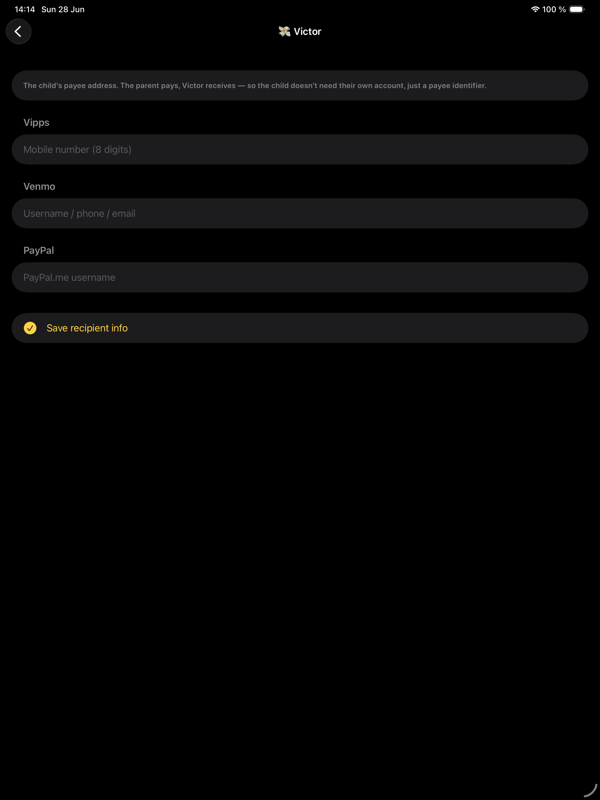
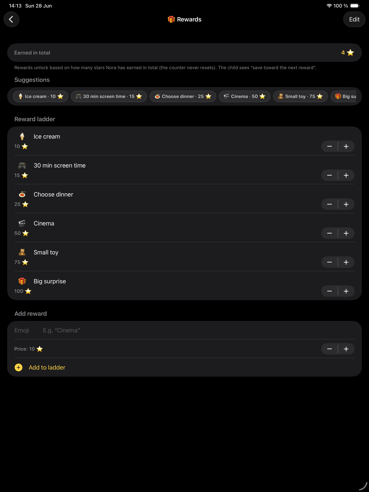

Å lære barn om penger kan føles overraskende vanskelig.
Du vil at de skal forstå sparing, forbruk og det å ta valg. Men for yngre barn kan penger være abstrakt. Tall på en bankkonto føles ikke alltid ekte. Selv kontanter kan føles løsrevet fra de hverdagslige handlingene som tjente dem inn.
Det er derfor stjerner kan være en nyttig bro.
Barn forstår ofte fremgang før de forstår penger. De kan se stjerner samle seg. De kan forstå at fem stjerner er nærmere en belønning enn én stjerne. De kan kjenne forskjellen på å bruke nå og å spare til noe større senere.
Et stjernesystem kan gjøre pengelærdom til noe synlig.
Barn forstår fremgang før de forstår penger
For voksne er penger et fleksibelt verktøy. For barn starter penger ofte som en enkel idé: «Kan jeg få det jeg vil ha?»
Det er derfor fremgang betyr noe.
Et barn forstår kanskje ikke helt verdien av 50 kroner, 5 dollar eller 10 euro. Men de kan forstå at de er halvveis til en belønning. De kan forstå at hvis de bruker stjernene sine i dag, trenger de mer tid for å nå den større premien.
Dette er grunnmuren i økonomisk læring:
- Innsats skaper verdi
- Verdi kan spares
- Sparing skaper valg
- Å bruke betyr å velge én ting fremfor en annen
Stjerner gjør disse leksjonene synlige før penger blir helt intuitivt.
Vil du ha roligere dager som dette? Start med OurFamilyHub — det er gratis.
Last ned i App StoreBruk stjerner som en bro

Stjerner fungerer fordi de er enkle.
Et barn fullfører en rutine eller oppgave. De tjener stjerner. Stjernene samler seg over tid. Til slutt kan de byttes inn i en belønning, et gode eller lommepenger.
Dette gir barn en trygg måte å øve på økonomisk tenkning uten å trenge direkte tilgang til ekte penger.
De kan stille spørsmål som:
- «Vil jeg ha en liten belønning nå?»
- «Vil jeg spare til noe større?»
- «Hvor mange stjerner til trenger jeg?»
- «Hva skjer hvis jeg bruker noen i dag?»
Dette er de samme spørsmålene voksne stiller om penger — bare i et barnevennlig format.
Belønninger kontra lommepenger
Ikke alle familier vil knytte oppgaver og rutiner til penger. Det er helt greit.
Det finnes to vanlige måter å bruke stjerner på.
Stjerner for belønninger
Stjerner kan låse opp opplevelser eller goder, som å velge en film, få være oppe litt lenger, velge middag, dra på lekeplassen eller tjene skjermtid.
Dette fungerer godt for yngre barn og for familier som vil ha motivasjon uten å gjøre alt til økonomi.
Stjerner for lommepenger
Stjerner kan også kobles til lommepenger. Det kan hjelpe eldre barn å forstå at innsats, sparing og forbruk henger sammen.
Det viktige er at foreldre beholder kontrollen. Barna bør kunne se fremgangen sin, men de voksne bør bestemme når og hvordan penger betales ut.
Hvorfor foreldre bør godkjenne hver utbetaling

Når ekte penger er involvert, betyr foreldrenes godkjenning noe.
OurFamilyHub er bygget rundt dette prinsippet. Barn kan tjene stjerner og velge å veksle dem inn, men appen flytter ikke penger selv. Forelderen bekrefter utbetalingen manuelt i sin egen betalingsapp.
Det holder forelderen i kontroll og gjør utbetalingen til et læringsøyeblikk.
I stedet for at penger forsvinner stille fra en konto, kan forelderen si:
«Du har spart nok stjerner. Vil du veksle dem inn nå, eller fortsette å spare til den større belønningen?»
Det er i den samtalen læringen skjer.
OurFamilyHub gjør disse idéene om til en enkel tavle barna faktisk kan følge.
Last ned i App StoreHvordan lære sparing og det å vente

Å kunne vente på noe — utsatt belønning — er en av de viktigste pengeleksjonene barn kan lære.
Men det er vanskelig å lære bort med formaninger. Det er lettere å lære bort med synlige valg.
En premie-stige hjelper fordi den viser ulike alternativer:
- Liten belønning: færre stjerner
- Middels belønning: flere stjerner
- Stor belønning: spar lenger
Barnet kan se avveiningen. Noen ganger velger de kanskje den minste belønningen. Det er helt greit. Målet er ikke å tvinge frem sparing hver gang. Målet er å hjelpe dem å forstå valget.
Over tid begynner barn å lære:
«Hvis jeg venter, kan jeg få noe større. Hvis jeg bruker nå, begynner jeg på nytt. Hvis jeg fortsetter, kan jeg nå målet mitt.»
Det er økonomisk forståelse i sin enkleste form.
Hold systemet positivt
Pengelæring bør ikke bli til press.
Unngå å bruke stjerner til å gjøre barn flaue eller sammenligne søsken. Et stjernesystem fungerer best når det fokuserer på personlig fremgang. Hvert barn kan ha sine egne mål, sin egen premie-stige og sitt eget tempo.
Budskapet bør være: «Du lærer. Innsatsen din betyr noe. Du kan ta valg. Du kan spare mot noe du bryr deg om.»
Det er en mye sunnere grunnmur enn å gjøre lommepenger til en daglig krangel.